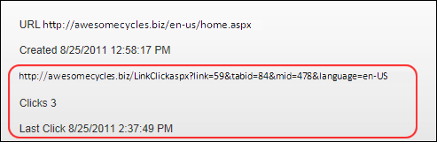
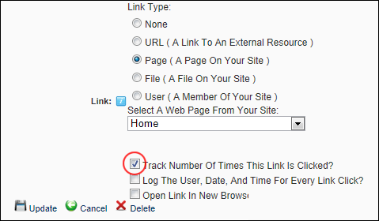

Enabling/Disabling Tracking of Link Clicks
How to track the number of times a link is clicked using the Link Control. This option can be used with any of the link types (URL, Page, File or User). Link Tracking information is displayed on the Edit Item page of any link it is enabled for. Enabling this setting records and displays the following additional link information:
- URL: Displays the URL that will be tracked. E.g. http://awesomecycles.biz/LinkClick.aspx?link=59&tabid=84&mid=478&language=en-US. Note: In the below image, more than one language is enabled for the site, therefore the link includes the associated language.
- Clicks: The total number of times this link has been clicked. This total includes clicks on other occurrences of this link on this module. However it does not include clicks on this link for other Links modules or any other types of modules. E.g. Click 3
- Last Click: The time and date when the link was last clicked. E.g. 8/25/2011 2:37:49 PM

Note: This tutorial assumes you are viewing the Link Control, typically located on a Settings page or displayed on an Edit Item page when adding/editing an item such as a link on a module.
- At Track Number Of Times This Link Is Clicked? to enable link tracking. - OR - to disable it.

-
Note: Link tracking isn't enabled and displayed until the item is updated and you return to the Edit Page for this item.